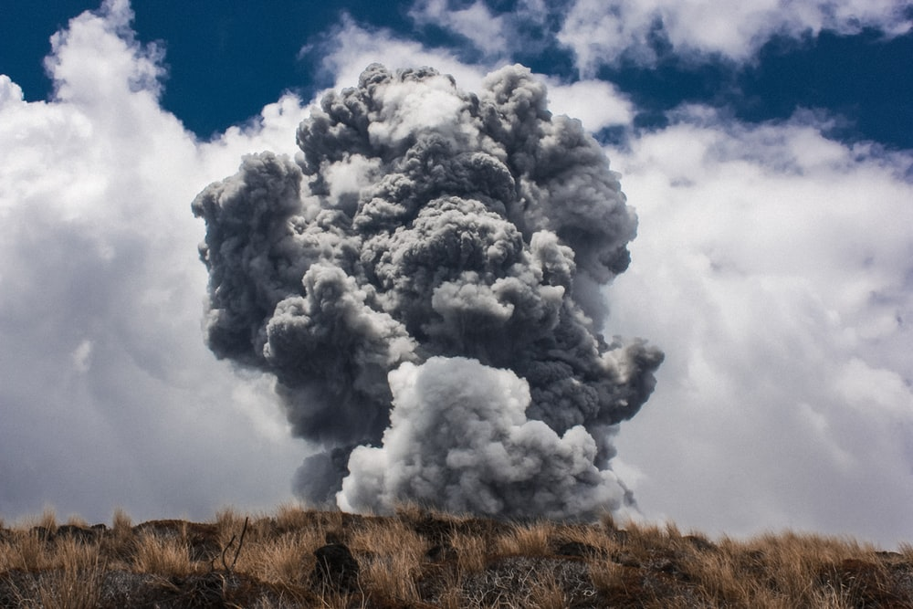
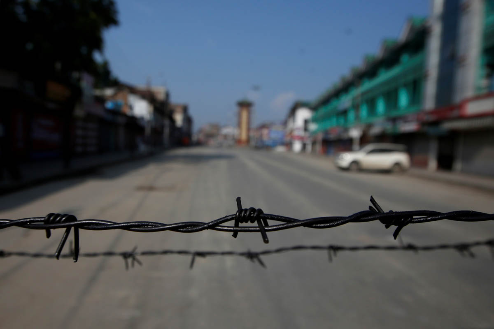

We need to change our lifestyles to become more
ethical and nature-connected... based on balance
between material progress and spirituality through a
positive Karma program.
WHY LIFE IN BALANCE?
The current state of the world is not just the result of the pandemic but an outcome of ill-treatment and dishonour of nature by human beings, corruption and unhealthy lifestyles.
Our lives continue to be increasingly stressful in spite of modernization. Human health and immunity levels are steadily deteriorating. The number of people experiencing depression is on the rise. Happiness and contentment are becoming scarce.
Of course we need material prosperity. But we also need spiritual growth, which enables us to perceive the good of the world. It allows us to develop our identities beyond possessions and achievements, as beings of consciousness. This would lead to overcoming our fears and living lives of greater purpose, in balance with life around us.

